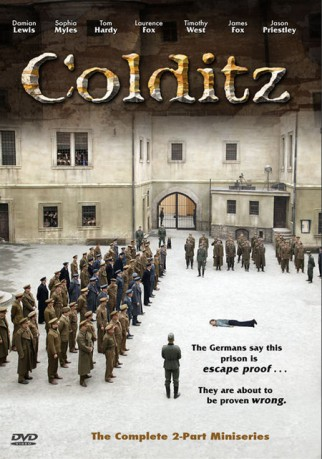
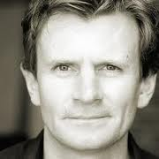

#5242 Colditz - Flucht in die Freiheit
Alternativ: Colditz
Auszeichnungen: 1 BAFTA-Awards gewonnen
 
 IMDB-Wertung: 6.8 / 10
IMDB-Wertung: 6.8 / 10  Metascore: 0
Metascore: 0 
Four Brits tunnel out of a German POW camp. One is killed, two are recaptured and one escapes. Scottish Corporal Nicholas McGrade, the lone escapee is a slacker and reluctant soldier, but is coerced into the secret MI9 Unit and participates in the facilitation of other escapes. Wills and Jack Rose, the two escapees who were recaptured are transferred to Colditz, a medieval castle in Saxony which has been refitted as an escape-proof, high security institution to house recitative prisoners who repeatedly attempt to escape. At Rose's request McGrade looks up Rose's girlfriend in Britain only to find out he is falling in love with her. When the faithful Lizzie rejects the advances of the smitten McGrade, he uses his influence to fake Jack's death so as to clear any obstacles to Lizzie.
Jahr: 2005
Dauer: 180 Minuten
FSK:
Land: England Studio: Contender Entertainment GroupTonspuren: DTS - ,
Untertitel:
Auflösung: 1080p (1920x1080) Größe: 15257 MB
Genre: Drama, Krieg
Regisseur: Stuart Orme
Drehbuch: Henry Farrell
Soundtrack:
Darsteller:
 Damian Lewis als Nicholas McGrade
Damian Lewis als Nicholas McGrade Sophia Myles als Lizzie Carter
Sophia Myles als Lizzie Carter Tom Hardy als Jack
Tom Hardy als Jack Laurence Fox als Willis
Laurence Fox als Willis James Fox als Lt. Colonel Fordham
James Fox als Lt. Colonel Fordham Timothy West als Bunny Warren
Timothy West als Bunny Warren- Jason Priestley als Rhett Barker
- Guy Henry als Sawyer
- Robert Whitelock als Venning
 Scott Handy als Mullan
Scott Handy als Mullan- Joseph Beattie als Barnes
 Luke Neal als Hewitt
Luke Neal als Hewitt Juliet Howland als Mary
Juliet Howland als Mary- Eve Myles als Jill
 Werner Daehn als Ullman
Werner Daehn als Ullman- Armin Dillenberger als Meisner
-  Charles Edwards als Ellways
 Stephane Cornicard als Leblanc
Stephane Cornicard als Leblanc- Daniel Weyman als Bell
 Pavel Kríz als Leipzig Contact
Pavel Kríz als Leipzig Contact- Robert Cambrinus als Tony de Jongh
- Alex Avery als Collins
 Teresa Churcher als Woman with Baby
Teresa Churcher als Woman with Baby- Charles Kay als Colonel Henry Cartwright, Military Attaché in Switzerland
- Paulina Nemcova als Swiss Woman in Bar
 Rüdiger Vogler als Fritz Werner
Rüdiger Vogler als Fritz Werner- Daniel Hawksford als Cole
- Petr Meissel als Jan Novak
- Bogdan Cieslar als Polish Translator
- Blanka Jarosova als Mrs. M
- Eve Kelemenova als Woman on Train
- Justin Svoboda als Soldier on Train
- Joel Kirby als Soldier on Train
- Abigail Hayes als WVS Woman
- Zoe Aggeliki als Gina
- Lucie Brezovská als Farmer's Wife
- Pavel Cajzl als Swiss Man in Bar
- Martin Scully als Morse Operator
Datei: X:\2005(A-F)\Colditz - Flucht in die Freiheit (2005, FSK, 1920x1080).mkv seit 03.01.2017
Festplatte: HD 2003-2004-2005(A-F)
 Es gibt insgesamt 49 Filme in der Gruppe '2005(A-F)'
Es gibt insgesamt 49 Filme in der Gruppe '2005(A-F)'